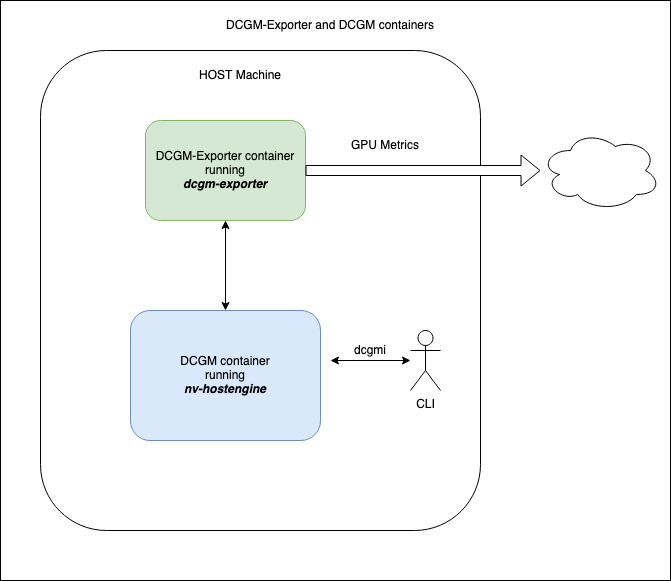

DCGM Exporter
Introduction
DCGM-Exporter is a tool based on the
Go APIs to NVIDIA DCGM that allows users to gather
GPU metrics and understand workload behavior or monitor GPUs in clusters. DCGM Exporter is
written in Go and exposes GPU metrics at an HTTP endpoint (/metrics) for monitoring solutions
such as Prometheus.
For information on the profiling metrics available from DCGM, refer to Profiling in the DCGM documentation.
You can run DCGM Exporter as a standalone container or deployed as a daemonset on GPU nodes in a Kubernetes cluster.
Because DCGM Exporter starts nv-hostengine as an embedded process (for collecting metrics), appropriate configuration options should be used if DCGM Exporter is run on systems (such as NVIDIA DGX) that have DCGM (or rather nv-hostengine) running.
Running DCGM Exporter
The DCGM Exporter container can be run using a container engine such as Docker. In this mode, DCGM Exporter starts nv-hostengine as an embedded process and starts publishing metrics:

$ DCGM_EXPORTER_VERSION=2.1.4-2.3.1 && \
docker run -d --rm \
--gpus all \
--net host \
--cap-add SYS_ADMIN \
nvcr.io/nvidia/k8s/dcgm-exporter:${DCGM_EXPORTER_VERSION}-ubuntu20.04 \
-f /etc/dcgm-exporter/dcp-metrics-included.csv
Retrieve the metrics:
$ curl localhost:9400/metrics
# HELP DCGM_FI_DEV_SM_CLOCK SM clock frequency (in MHz).
# TYPE DCGM_FI_DEV_SM_CLOCK gauge
# HELP DCGM_FI_DEV_MEM_CLOCK Memory clock frequency (in MHz).
# TYPE DCGM_FI_DEV_MEM_CLOCK gauge
# HELP DCGM_FI_DEV_MEMORY_TEMP Memory temperature (in C).
# TYPE DCGM_FI_DEV_MEMORY_TEMP gauge
...
DCGM_FI_DEV_SM_CLOCK{gpu="0", UUID="GPU-604ac76c-d9cf-fef3-62e9-d92044ab6e52"} 139
DCGM_FI_DEV_MEM_CLOCK{gpu="0", UUID="GPU-604ac76c-d9cf-fef3-62e9-d92044ab6e52"} 405
DCGM_FI_DEV_MEMORY_TEMP{gpu="0", UUID="GPU-604ac76c-d9cf-fef3-62e9-d92044ab6e52"} 9223372036854775794
...
DCGM-Exporter Customization
DCGM-Exporter has various options for adjusting its default behavior. Each option supports both a command-line flag and environment variable.
Environment Variable |
Command-Line Flag |
Value |
|---|---|---|
|
|
File Path |
Path to file containing DCGM fields to collect. Default: “/etc/dcgm-exporter/default-counters.csv” |
||
|
|
Address |
Address of listening http server. Default: “:9400” |
||
|
|
Interval |
Interval of time at which point metrics are collected. Unit is milliseconds. Default:30000 |
||
|
|
Boolean |
Enable kubernetes mapping metrics to kubernetes pods. Default: false |
||
|
|
Namespace:Name |
ConfigMap namespace and name containing DCGM fields to collect. Default: “none” |
||
|
|
Host:Port |
Connect to remote hostengine at Host:Port. Default: NA (dcgm-exporter will started in embedded mode) |
||
|
|
Device String (see following note) |
Specify which devices to monitor. Default: all GPU instances in MIG mode, all GPUs if MIG disabled. |
||
Note
Device String Syntax: [f] | [g[:id1[,-id2]]] | [i[:id1[,-id2]]]
If an id list is used, then devices with matching IDs must exist on the system. For example:
f= Monitor all GPUs if MIG is disabled, or all GPU instances if MIG is enabledg= Monitor all GPUsi= Monitor all GPU instancesg:0,1= monitor GPUs 0 and 1i:0,2-4= monitor GPU instances 0, 2, 3, and 4.
Warning
-icannot be specified unless MIG mode is enabled.Any time indices are specified, those indices must exist on the system.
In MIG mode, only
foriwith a range can be specified. GPUs are not assigned to pods and therefore reporting must occur at the GPU instance level. (default:f)
Connecting to an existing DCGM agent
In this scenario, system images include DCGM and have nv-hostengine running already. Examples include the DGX systems that bundles drivers, DCGM, etc. in the system image. To avoid any compatibility issues, it is recommended to have DCGM Exporter connect to the existing nv-hostengine daemon to gather/publish GPU telemetry data.
Warning
The DCGM Exporter container image includes a DCGM client library (libdcgm.so) to communicate with
nv-hostengine. In this deployment scenario we have DCGM Exporter (or rather libdcgm.so) connect
to an existing nv-hostengine running on the host. The DCGM client library uses an internal protocol to exchange
information with nv-hostengine. To avoid any potential incompatibilities between the container image’s DCGM client library
and the host’s nv-hostengine, it is strongly recommended to use a version of DCGM on which DCGM Exporter is based is
greater than or equal to (but not less than) the version of DCGM running on the host. This can be easily determined by
comparing the version tags of the DCGM Exporter image and by running nv-hostengine --version on the host.
In this scenario, we use the -r option to connect to an existing nv-hostengine process:
$ DCGM_EXPORTER_VERSION=2.1.4-2.3.1 &&
docker run -d --rm \
--gpus all \
--net host \
--cap-add SYS_ADMIN \
nvcr.io/nvidia/k8s/dcgm-exporter:${DCGM_EXPORTER_VERSION}-ubuntu20.04 \
-r localhost:5555 -f /etc/dcgm-exporter/dcp-metrics-included.csv
Connecting to a DCGM standalone container
In this scenario the DCGM nv-hostengine runs in a separate container on the same host making its client port available to DCGM-Exporter as well as dcgmi client commands.
{kind=link}
Warning
Similar to the warning when connecting to an existing DCGM agent, the DCGM Exporter container image includes a
DCGM client library (libdcgm.so) to communicate with nv-hostengine running in a separate container.
The DCGM client library in use by DCGM-Exporter uses an internal protocol to exchange information with nv-hostengine.
To avoid any potential incompatibilities between the container image’s DCGM client library
and the standalone DCGM container’s nv-hostengine, it is strongly recommended to ensure the version of DCGM on which
DCGM Exporter is based is greater than or equal to (but not less than) the version of DCGM running in the standalone
container. This can be easily determined by comparing the version tags of the DCGM Exporter and dcgm standalone image.
First, start the standalone DCGM container with the nv-hostengine port available to external applications:
$DCGM_VERSION=2.2.9 &&
docker run -d --rm \
--gpus all \
--cap-add SYS_ADMIN \
-p 5555:5555 \
nvidia/dcgm:${DCGM_VERSION}-ubuntu20.04
Second, start the dcgm-exporter container with r option to connect to an existing nv-hostengine port:
$DCGM_EXPORTER_VERSION=2.2.9-2.5.0 &&
docker run -d --rm \
--gpus all \
--net host \
--cap-add SYS_ADMIN \
nvcr.io/nvidia/k8s/dcgm-exporter:${DCGM_EXPORTER_VERSION}-ubuntu20.04 \
-r localhost:5555 -f /etc/dcgm-exporter/dcp-metrics-included.csv
In this scenario dcgmi commands run on the host will also connect to the nv-hostengine running in the standalone DCGM container:
dcgmi discovery -l
1 GPU found.
+--------+----------------------------------------------------------------------+
| GPU ID | Device Information |
+--------+----------------------------------------------------------------------+
| 0 | Name: Quadro RTX 6000 |
| | PCI Bus ID: 00000000:65:00.0 |
| | Device UUID: GPU-2f6576bf-3c29-1fbb-068d-e74c4a97f0c5 |
+--------+----------------------------------------------------------------------+
Multi-Instance GPU (MIG) Support
The new Multi-Instance GPU (MIG) feature allows the GPUs based on the NVIDIA Ampere architecture to be securely partitioned into up to seven separate GPU Instances for CUDA applications, providing multiple users with separate GPU resources for optimal GPU utilization.
For more information on MIG, refer to the MIG User Guide.
Note
Support for MIG in DCGM Exporter was added starting with 2.4.0-rc.2. Replace the container image with this tag in the
command line examples above: 2.1.8-2.4.0-rc.2-ubuntu20.04. If you are connecting to an existing DCGM on the host system,
ensure that you upgrade to at least 2.1.8 on the host system.
DCGM Exporter publishes metrics for both the entire GPU as well as individual MIG devices (or GPU instances) as can be seen in the output below:
DCGM_FI_DEV_SM_CLOCK{gpu="0",UUID="GPU-34319582-d595-d1c7-d1d2-179bcfa61660",device="nvidia0",Hostname="ub20-a100-k8s"} 1215
DCGM_FI_DEV_MEM_CLOCK{gpu="0",UUID="GPU-34319582-d595-d1c7-d1d2-179bcfa61660",device="nvidia0",Hostname="ub20-a100-k8s"} 1215
DCGM_FI_DEV_MEMORY_TEMP{gpu="0",UUID="GPU-34319582-d595-d1c7-d1d2-179bcfa61660",device="nvidia0",Hostname="ub20-a100-k8s"} 69
DCGM_FI_DEV_GPU_TEMP{gpu="0",UUID="GPU-34319582-d595-d1c7-d1d2-179bcfa61660",device="nvidia0",Hostname="ub20-a100-k8s"} 61
DCGM_FI_DEV_POWER_USAGE{gpu="0",UUID="GPU-34319582-d595-d1c7-d1d2-179bcfa61660",device="nvidia0",Hostname="ub20-a100-k8s"} 409.692000
DCGM_FI_DEV_TOTAL_ENERGY_CONSUMPTION{gpu="0",UUID="GPU-34319582-d595-d1c7-d1d2-179bcfa61660",device="nvidia0",Hostname="ub20-a100-k8s"} 319159391
DCGM_FI_DEV_PCIE_REPLAY_COUNTER{gpu="0",UUID="GPU-34319582-d595-d1c7-d1d2-179bcfa61660",device="nvidia0",Hostname="ub20-a100-k8s"} 0
DCGM_FI_DEV_XID_ERRORS{gpu="0",UUID="GPU-34319582-d595-d1c7-d1d2-179bcfa61660",device="nvidia0",Hostname="ub20-a100-k8s"} 0
DCGM_FI_DEV_FB_FREE{gpu="0",UUID="GPU-34319582-d595-d1c7-d1d2-179bcfa61660",device="nvidia0",Hostname="ub20-a100-k8s"} 35690
DCGM_FI_DEV_FB_USED{gpu="0",UUID="GPU-34319582-d595-d1c7-d1d2-179bcfa61660",device="nvidia0",Hostname="ub20-a100-k8s"} 4845
DCGM_FI_DEV_NVLINK_BANDWIDTH_TOTAL{gpu="0",UUID="GPU-34319582-d595-d1c7-d1d2-179bcfa61660",device="nvidia0",Hostname="ub20-a100-k8s"} 0
DCGM_FI_DEV_VGPU_LICENSE_STATUS{gpu="0",UUID="GPU-34319582-d595-d1c7-d1d2-179bcfa61660",device="nvidia0",Hostname="ub20-a100-k8s"} 0
DCGM_FI_PROF_GR_ENGINE_ACTIVE{gpu="0",UUID="GPU-34319582-d595-d1c7-d1d2-179bcfa61660",device="nvidia0",Hostname="ub20-a100-k8s"} 0.995630
DCGM_FI_PROF_PIPE_TENSOR_ACTIVE{gpu="0",UUID="GPU-34319582-d595-d1c7-d1d2-179bcfa61660",device="nvidia0",Hostname="ub20-a100-k8s"} 0.929260
DCGM_FI_PROF_DRAM_ACTIVE{gpu="0",UUID="GPU-34319582-d595-d1c7-d1d2-179bcfa61660",device="nvidia0",Hostname="ub20-a100-k8s"} 0.690789
DCGM_FI_PROF_PCIE_TX_BYTES{gpu="0",UUID="GPU-34319582-d595-d1c7-d1d2-179bcfa61660",device="nvidia0",Hostname="ub20-a100-k8s"} 33011804
DCGM_FI_PROF_PCIE_RX_BYTES{gpu="0",UUID="GPU-34319582-d595-d1c7-d1d2-179bcfa61660",device="nvidia0",Hostname="ub20-a100-k8s"} 97863601
DCGM_FI_DEV_XID_ERRORS{gpu="0",UUID="GPU-34319582-d595-d1c7-d1d2-179bcfa61660",device="nvidia0",GPU_I_PROFILE="1g.5gb",GPU_I_ID="13",Hostname="ub20-a100-k8s"} 0
DCGM_FI_PROF_GR_ENGINE_ACTIVE{gpu="0",UUID="GPU-34319582-d595-d1c7-d1d2-179bcfa61660",device="nvidia0",GPU_I_PROFILE="1g.5gb",GPU_I_ID="13",Hostname="ub20-a100-k8s"} 0.995687
DCGM_FI_PROF_PIPE_TENSOR_ACTIVE{gpu="0",UUID="GPU-34319582-d595-d1c7-d1d2-179bcfa61660",device="nvidia0",GPU_I_PROFILE="1g.5gb",GPU_I_ID="13",Hostname="ub20-a100-k8s"} 0.930433
DCGM_FI_PROF_DRAM_ACTIVE{gpu="0",UUID="GPU-34319582-d595-d1c7-d1d2-179bcfa61660",device="nvidia0",GPU_I_PROFILE="1g.5gb",GPU_I_ID="13",Hostname="ub20-a100-k8s"} 0.800339
For more information on the profiling metrics and how to interpret the metrics, refer to the profiling metrics section of the DCGM user guide.